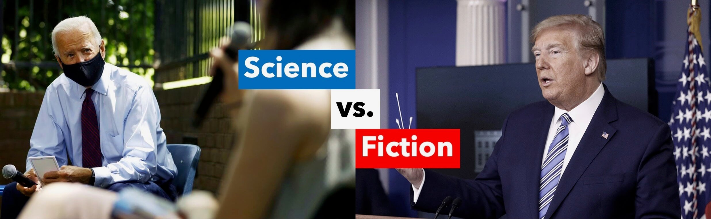
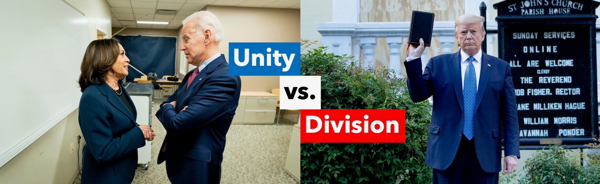
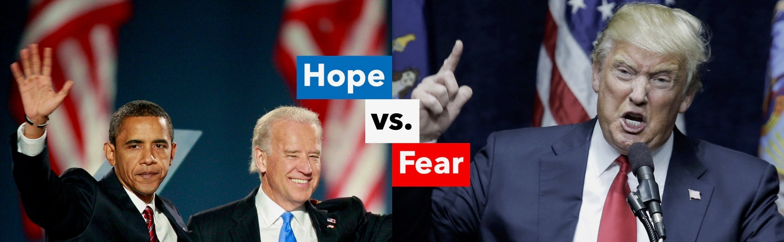
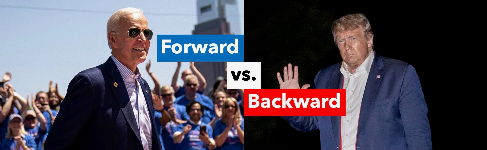

<!DOCTYPE html>
    <head>
        <meta name="robots" content="noindex, nofollow, "/>
    </head>
    <body>
        <!-- <div class="tl-block">
					<div class="tlbl-element">
						<p class="tlbl" id="tlbl-t">"I'm voting Green Party"</p>
					</div>
					<div class="tlbl-element" style="font-size:22pt;margin-bottom:28px;">
						&nbsp;<p class="tlbl" id="tlbl-b-tr">= A vote for Trump</p>
					</div>
					<div class="tlbl-element">
						<p class="tlbl" id="tlbl-t">"I'm writing in Bernie"</p>
					</div>
					<div class="tlbl-element" style="font-size:22pt;margin-bottom:28px;">
						&nbsp;<p class="tlbl" id="tlbl-b-tr">= A vote for Trump</p>
					</div>
					<div class="tlbl-element">
						<p class="tlbl" id="tlbl-t">"I'm not voting"</p>
					</div>
					<div class="tlbl-element" style="font-size:22pt;margin-bottom:28px;">
						&nbsp;<p class="tlbl" id="tlbl-b-tr">= A vote for Trump</p>
					</div>
					<div class="tlbl-element">
						<p class="tlbl" id="tlbl-t">"I'm voting for Joe Biden"</p>
					</div>
					<div class="tlbl-element" style="font-size:22pt;">
						&nbsp;<p class="tlbl" id="tlbl-b-j">= A vote for our future</p>
					</div>
				</div> -->

                <!-- 
			<p class="banner-message-2" id="what-we-do">There's a lot at stake in this election. It's about Science vs. Fiction. Unity vs. Division. Hope vs. Fear. <b>Forward vs. Backward.</b></p>
			<div class="blitz-info-container">
				<p class="info-content">Inspired by the Lincoln Project, we’re making short, engaging videos highlighting Donald Trump’s abysmal performance on issues that matter to young people (e.g. racial justice, climate change, coronavirus and public health, student debt, etc.) and demonstrating how Joe Biden will move us in the right direction on each of those issues, despite his imperfections.</p>
			</div>
			SECTION 3: what we're doing 
			<div class="tlbl-element" style="text-align:center;">
				<p class="info-banner-1" >We're building something new.</p>
			</div>
			<div class="blitz-info-container">
				<p class="info-content">To reach voters with our videos, we’re trying something new and exciting. We’re building a grassroots network of individuals and organizations who are willing to post them online in a series of coordinated social media blitzes.</p>
				<p class="info-content">We’re currently stockpiling videos in anticipation of our first blitz in  early-mid August. Members of our network will be given early access to our videos ahead of each round so they can choose whether to participate.</p>
			</div>
			
			<p class="banner-message-1" id="who-we-are" style="margin-bottom:30px;">Who we are</p>
			<p class="banner-message-2" style="margin-bottom:20px;font-size:24px;">We're a group of young progressives from across the country committed to using the new digital arena to help beat Donald Trump this fall.</p>
			<p class="banner-message-2" style="margin-bottom:50px;font-size:24px;">We've grown up along with the internet and still believe it has the capacity to help drive progress&mdash; despite the ugliness of today's online discourse.</p>
			
			<p class="banner-message-1" id="fellowship-button"style="margin-bottom:30px;">We're launching our Fellowship Program</p>
			<p class="banner-message-2" style="margin-bottom:20px;font-size:24px;">The Decency Project is looking for highly motivated students, citizens, and advocates to join our team as Fellows. Fellows will work directly with senior staff to execute the “ground game” of this campaign.<br><br>Applications are being accepted on a rolling basis until August 18th.</p>
			<p class="info-content" style="text-align:center;"><a href="https://docs.google.com/forms/d/e/1FAIpQLSez5FXeXtCIQbZylRUQ2xRJHV01EQSwghw-d4oORs7m3CZzeA/viewform" style="margin-bottom:50px;" class="join-link" target="_blank">Apply for Fellowship</a></p>
			
			<p class="banner-message-1" style="margin-bottom:30px;">This is the most important election in our lifetime. Let's #DemandDecency in the Oval Office.</p> -->
    </body>
</html>